01 / MEET THE STUDIO
JOSEPHINE
FOUNDER & CEO
Every project begins with Josephine’s question: what does this space need to do for your life? She stays with the answer all the way to reality.
Your space. Your system. Explore interiors, choose your finish, and build a room that grows with you.
01 / Signature designers
Different eyes. One considered approach. Meet the people who turn the way you live into the space you call yours.
01 / MEET THE STUDIO
FOUNDER & CEO
Every project begins with Josephine’s question: what does this space need to do for your life? She stays with the answer all the way to reality.
02 / MEET THE STUDIO
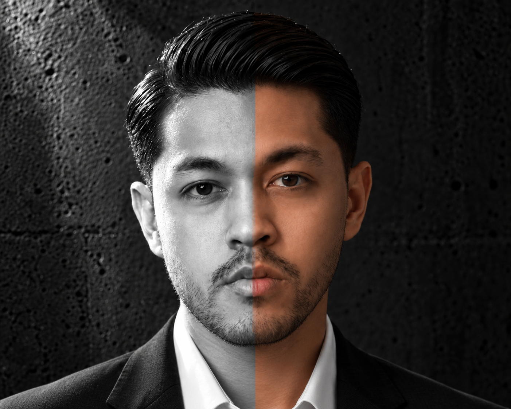
ARCHITECT OF FORM
Daffa sees the line that feels a little off. He takes away the noise, one decision at a time, until the room has space to breathe.
03 / MEET THE STUDIO
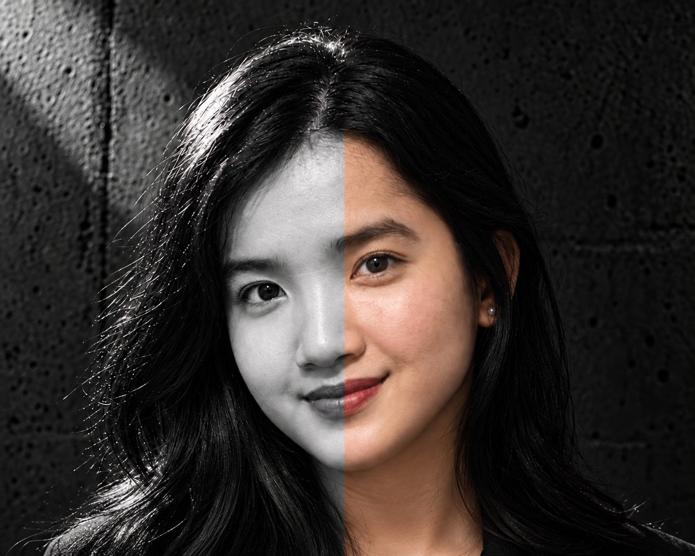
THE SOUL OF SPACE
Audina notices the rituals a floor plan can miss: where you settle, gather, and put your keys down. She makes a layout feel like it belongs to you.
SPACES WITH A POINT OF VIEW
Beautifully lived.
Entirely your style.
Explore considered spaces, discover the theme that feels like you, and shop the SECHA finishes and modular pieces curated for that look.
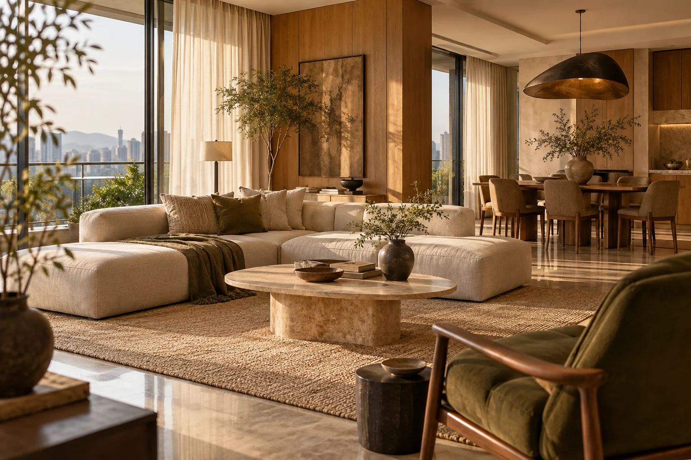
The golden hour edit
Natural textures, clean lines and a quiet warmth that brings the room together.
Oak · Linen · Travertine
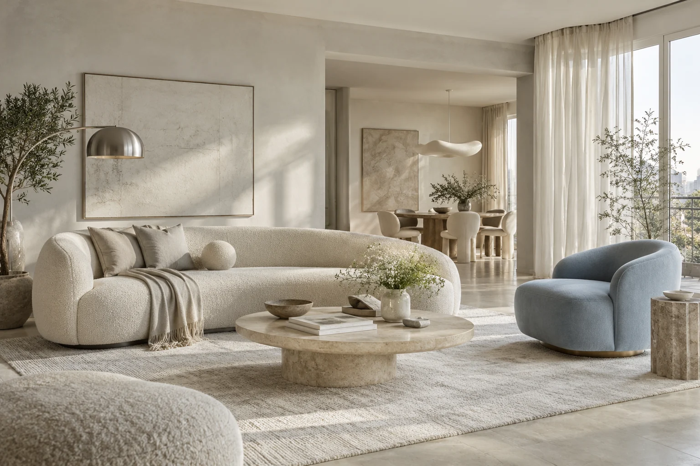
Room to exhale
A light, open feeling with gentle contrasts, thoughtful details and room to breathe.
Bouclé · Limestone · Brushed steel
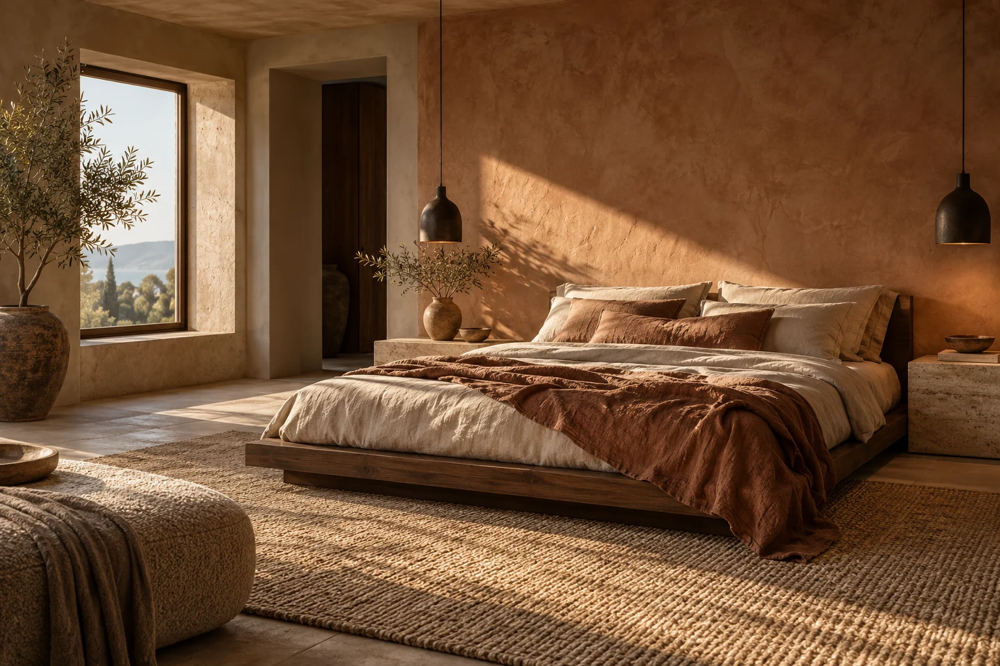
The art of slowing down
Rich wood, grounded tones and a softer light. A personal place to slow down.
Walnut · Flax linen · Clay
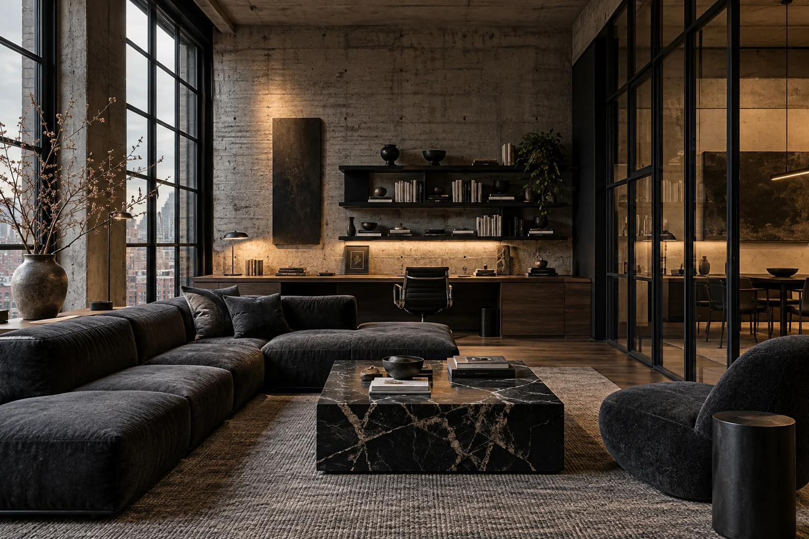
A different kind of edge
Architectural lines, honest materials and considered contrast for a space with presence.
Concrete · Smoked oak · Steel
THE STYLING STUDIO™ / COMMERCIAL COLLECTION
A distinct atmosphere for every kind of business. Explore five interior directions, from the first impression to the smallest detail.
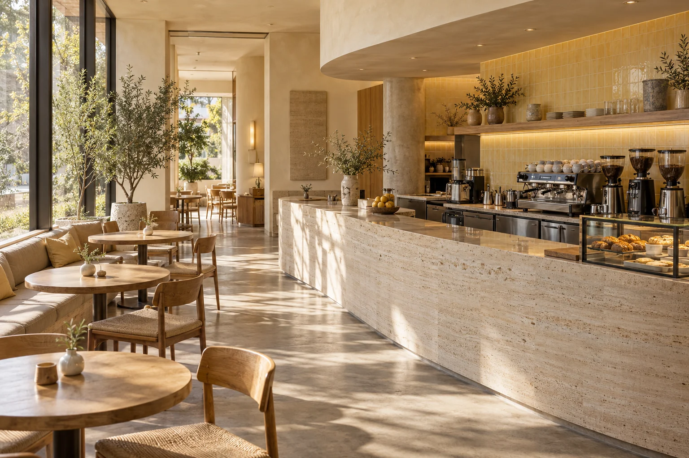
Soft brutalism
Stone, sunlight and a generous welcome. A warm café direction built around everyday rituals and a beautifully considered counter.
Travertine · Oak · Glazed tile
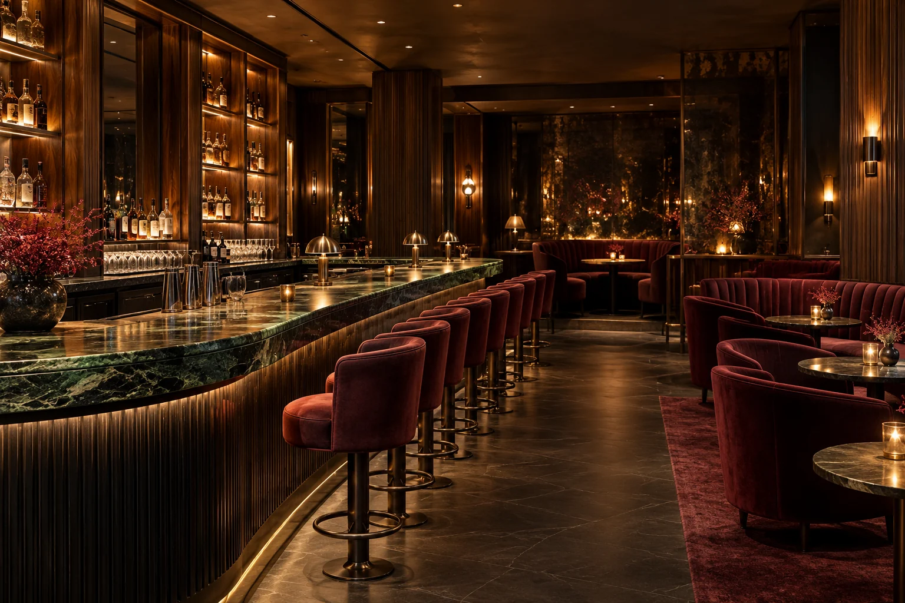
Cinematic deco
A little theatre after dark. Oxblood seating, reflective depth and a sweeping stone bar create an intimate setting for the evening.
Walnut · Velvet · Aged brass
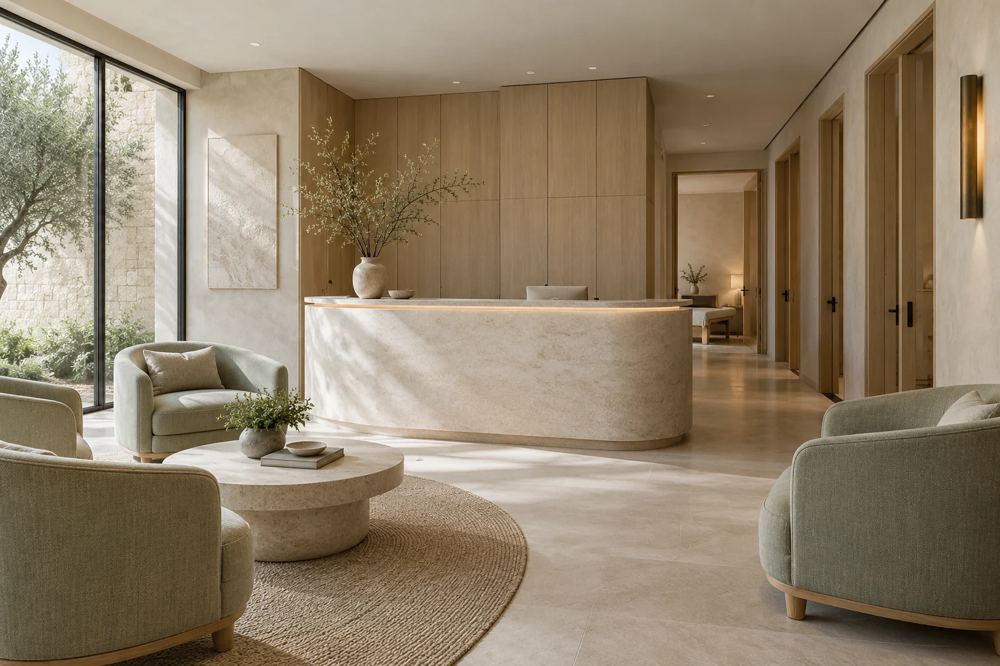
Mineral calm
A quieter kind of luxury. Soft mineral tones, tactile surfaces and space to pause make the first moments feel unhurried.
Limestone · Pale oak · Celadon linen
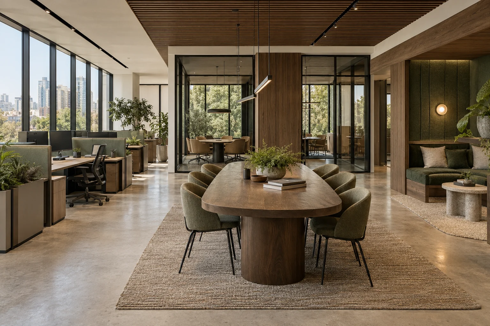
Warm precision
Work with a more human rhythm. Clear zones, acoustic layers and warm joinery balance concentration with the energy of coming together.
Smoked oak · Acoustic felt · Steel
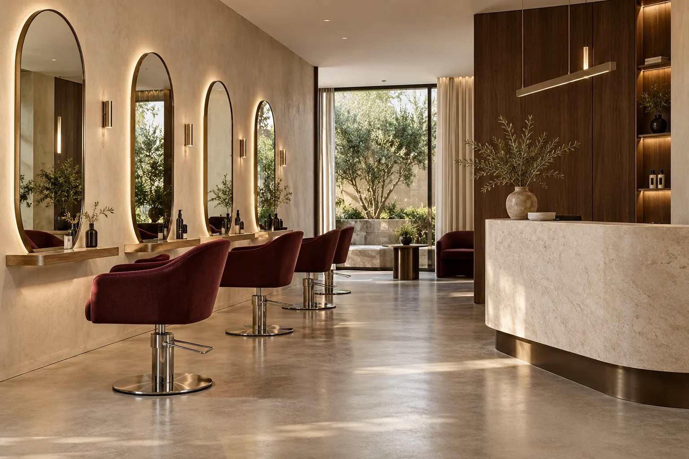
Sculptural modernism
An expressive space for transformation. Sculptural stations, flattering light and rich upholstered accents make each appointment feel considered.
Bone plaster · Brushed metal · Wine velvet
Generated design concepts / Your designer tailors the layout, finishes and operational requirements to your business.
01 / Curated moodboards · The material library
Grain, softness, a little reflection. Explore the materials behind each SECHA direction, then make them your own.
Explore the material swatches below. Enable WebGL to inspect the 3D samples.
01 / The SECHA collection
Start with a modular room system, commission a design, or take a material sample home. Every build begins with your space and a confirmed quote.
Modular packages are starting estimates for the listed configuration, not binding offers. Site conditions, dimensions, installation, delivery and applicable taxes are confirmed in your final quote. Studio sheets illustrate each system and design scope; included modules are listed on each card. Drawings are schematic.
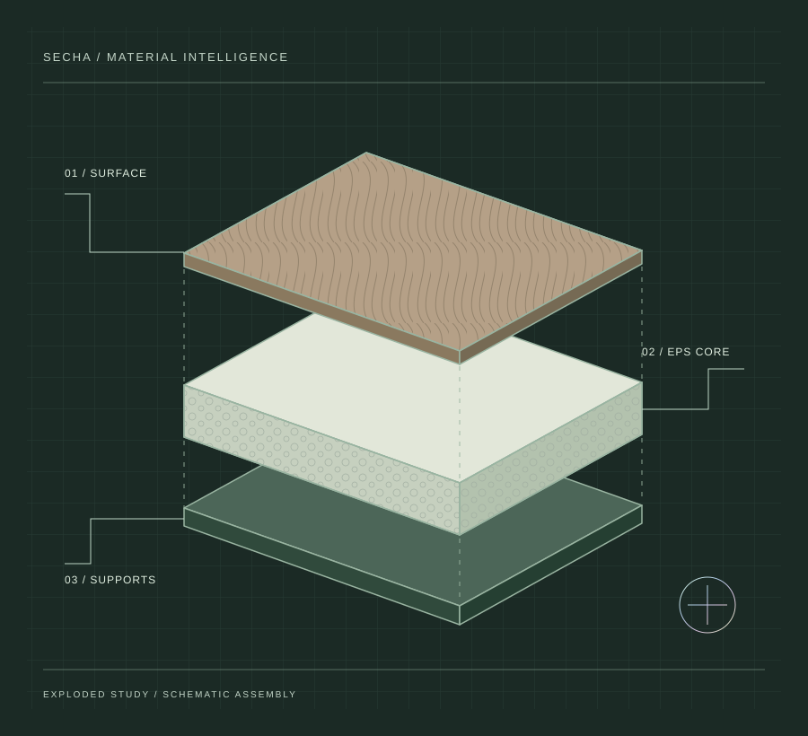
02 / A lighter way to build
EPS-based materials form the lightweight core of selected SECHA interior panels. The finish, supports and fixing details are specified together, around your space.
Selected EPS-based interior panels, coordinated joinery and surface finishes. Structural works, MEP changes, appliances, loose furniture, delivery and installation need a separately confirmed scope. Final panel layers and fixings require project-specific review; the illustration is not a manufacturing drawing.
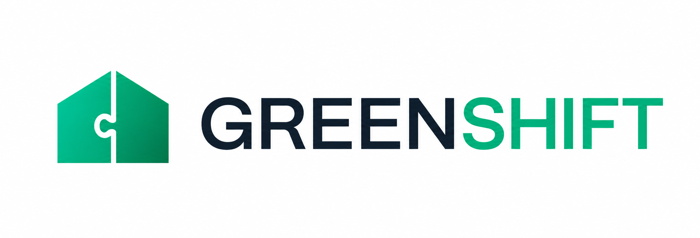
03 / One space for all your ideas
SECHA PLAYGROUNDBuild from a blank canvas or step into a furnished space. Try materials, change the light, and take a walk through your next idea.
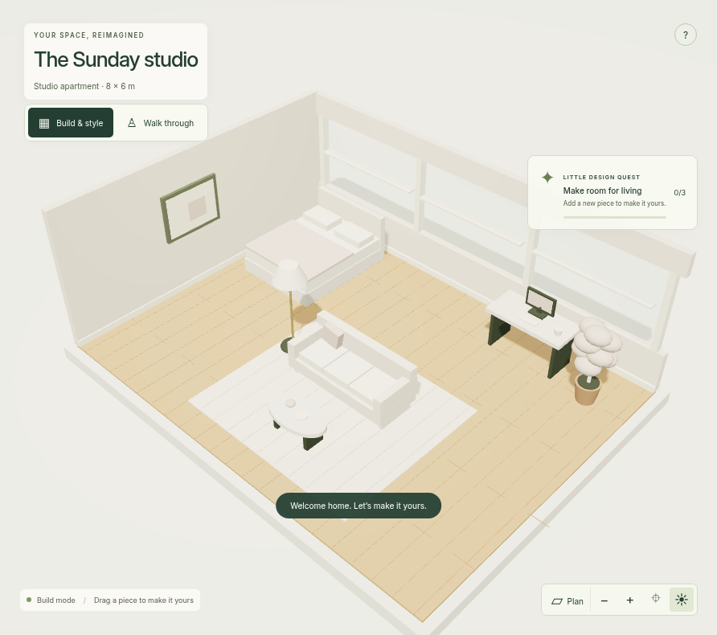
04 / How we work
A clear path, with room for your ideas.
Choose a step to see
what happens next.
03 / DESIGN BEFORE YOU BUILD
Choose what you need help with. We’ll take you to the relevant service in the collection.
04 / MAKE IT YOURS
Share the details of your space. We’ll confirm the scope and final quote together.
Choose a room system, design service or sample to begin.